Selected Publications
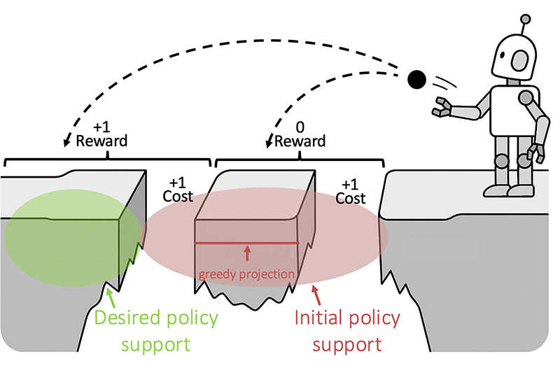
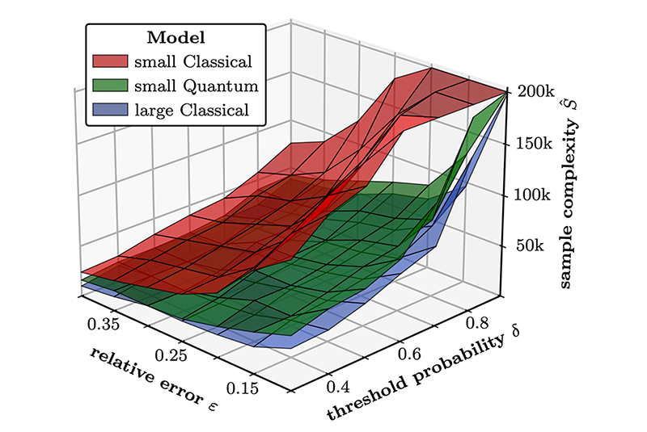
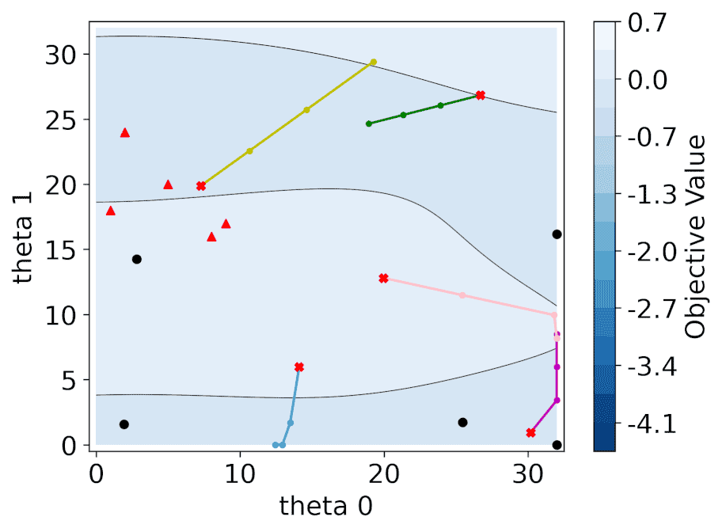
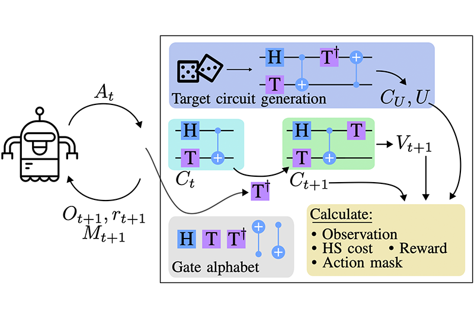
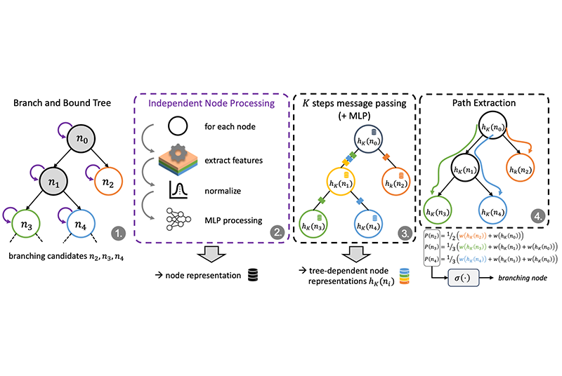
All Publications


SafeMPO: Constrained Reinforcement Learning with Probabilistic Incremental Improvement
We propose SafeMPO, a constrained reinforcement learning framework that incorporates safety constraints directly into the policy optimization process through safety-aware policy updates. By jointly optimizing task performance and constraint satisfaction, SafeMPO improves policy learning while reducing safety violations and maintaining strong overall performance.

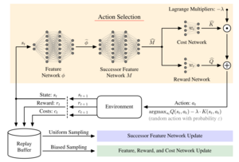
Constrained Reinforcement Learning Using Successor Representations
We propose the Safe Deep Successor Representation (SafeDSR), a novel method that allows quick retraining of policies towards new cost structures. SafeDSR extends the Deep Successor Representation to Constrained Reinforcement Learning by introducing a single learnable weight matrix to decouple the learned value function across dynamics, rewards, and costs.
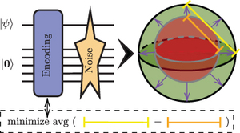
Learning encodings by maximizing state distinguishability: Variational quantum error correction
We propose a novel objective function for tailoring error correction codes to specific noise structures by maximizing the distinguishability between quantum states after a noise channel, ensuring efficient recovery operations. We formalize this concept with the distinguishability loss function, serving as a machine learning objective to discover resource-efficient encoding circuits optimized for given noise characteristics. We implement this methodology using variational techniques, termed variational quantum error correction. Our approach yields codes with desirable theoretical and practical properties and surpasses standard codes of comparable size under structured noise. We also provide proof-of-concept demonstrations on IBM and IQM hardware devices, highlighting the practical relevance of our procedure.
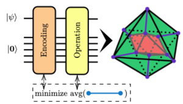


Variational and Generative Models with Quantization for Disentanglement and Compressed Sensing of GNSS Spectrograms
We propose variational autoencoders (VAEs) for disentanglement to extract essential latent features that enable accurate classification of interferences. We demonstrate that the disentanglement approach can be leveraged for both data compression and data augmentation by interpolating the lower-dimensional latent representations of signal power. To validate our approach, we evaluate three VAE variants—vanilla, factorized, and conditional generative—and benchmark 19 state-of-the-art VAE and generative models on five distinct datasets, including three collected in controlled indoor environments and two real-world highway datasets. In addition, we conduct extensive hyperparameter searches to optimize performance. Our proposed VAE achieves a data compression rate ranging from 512 to 8192 and achieves an accuracy up to 99.92%. Quantizing our model from float32 to int8 results in a fourfold reduction in model weight size.

Multi-Objective Bayesian Optimization with Reinforcement Learning for Edge Deployment of DNNs on Microcontrollers
We present a novel NAS strategy for edge deployment using multi-objective Bayesian optimization (MOBOpt) and reinforcement learning (RL).
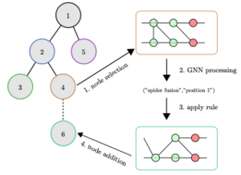
Optimizing quantum circuits via zx diagrams using reinforcement learning and graph neural networks
We introduce a framework based on ZX calculus, graph-neural networks and reinforcement learning for quantum circuit optimization. By combining reinforcement learning and tree search, our method addresses the challenge of selecting optimal sequences of ZX calculus rewrite rules. Instead of relying on existing heuristic rules for minimizing circuits, our method trains a novel reinforcement learning policy that directly operates on ZX-graphs, therefore allowing us to search through the space of all possible circuit transformations to find a circuit significantly minimizing the number of CNOT gates. This way we can scale beyond hard-coded rules towards discovering arbitrary optimization rules. We demonstrate our method's competetiveness with state-of-the-art circuit optimizers and generalization capabilities on large sets of diverse random circuits.

Unsupervised Learning of Variational Autoencoders on Cortex-M Microcontrollers
We explore variational autoencoders as a way to train unsupervised, i.e., without labels, feature extractors for image classification on a Cortex-M MCU. Using these feature extractors, we then train classification heads using small labeled representative sets of data to solve classification tasks. Our approach significantly reduces the amount of labeled data required, while enabling full DNN training from scratch on resource-constrained devices.
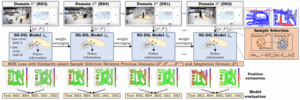
5G-DIL: Domain Incremental Learning with Similarity-Aware Sampling for Dynamic 5G Indoor Localization
This paper introduces a domain incremental learning (DIL) approach for dynamic 5G indoor localization, called 5GDIL, enabling rapid adaptation to environmental changes. We present a novel similarity-aware sampling technique based on the Chebyshev distance, designed to efficiently select specific exemplars from the previous environment while training only on the modified regions of the new environment. This avoids the need to train on the entire region, significantly reducing the time and resources required for adaptation without compromising localization accuracy. This approach requires as few as 50 exemplars from adaptation domains, significantly reducing training time while maintaining high positioning accuracy in previous environments. Comparative evaluations against state-of-the-art DIL techniques on a challenging real-world indoor dataset demonstrate the effectiveness of the proposed sample selection method. Our approach is adaptable to real-world non-line-ofsight propagation scenarios and achieves an MAE positioning error of 0.261 meters, even under dynamic environmental conditions.
Code: https://gitlab.cc-asp.fraunhofer.de/5g-pos/5g-dil
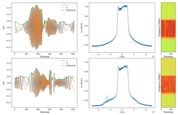
Attention-based Fusion of IQ and FFT Spectrograms with AoA Features for GNSS Jammer Localization
We propose an approach for detecting and classifying interference while estimating the distance, azimuth, and elevation of jamming sources. We evaluate 128 vision encoder and time-series models to identify the highest-performing methods for each task and introduce an attention-based fusion framework that integrates in-phase and quadrature (IQ) samples with Fast Fourier Transform (FFT)-computed spectrograms while incorporating 22 AoA features
to enhance localization accuracy.
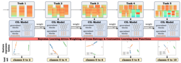
Bayesian Learning-driven Prototypical Contrastive Loss for Class-Incremental Learning
This paper proposes a method to learn an effective representation between previous and newly encountered class prototypes. We propose a prototypical network with a Bayesian learning-driven contrastive loss (BLCL), tailored specifically for class-incremental learning scenarios. We introduce a contrastive loss that incorporates novel classes into the latent representation by reducing intra-class and increasing inter-class distance. Our approach dynamically adapts the balance between the cross-entropy and contrastive loss functions with a Bayesian learning technique.